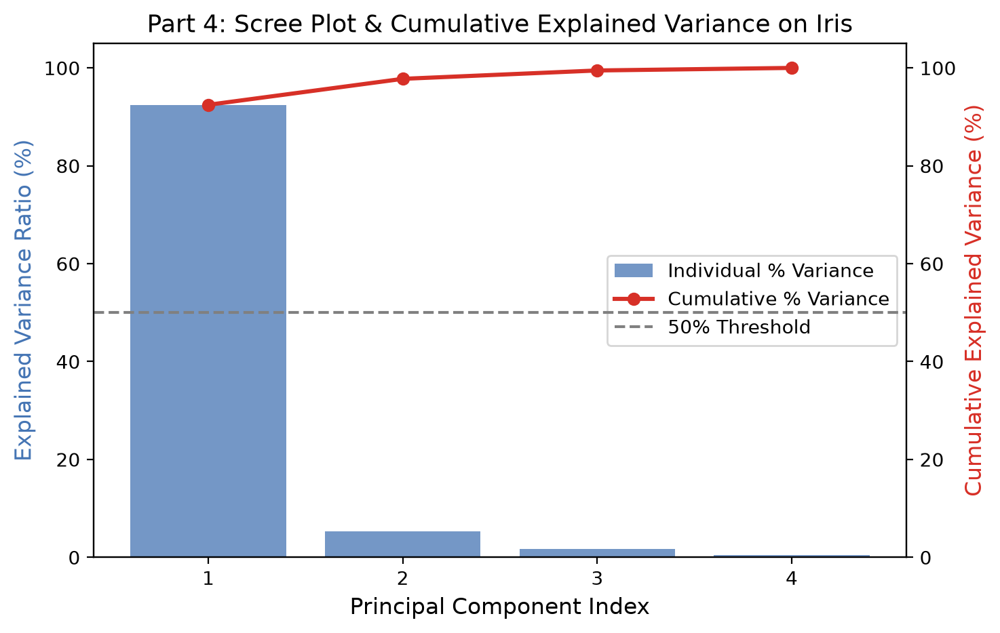
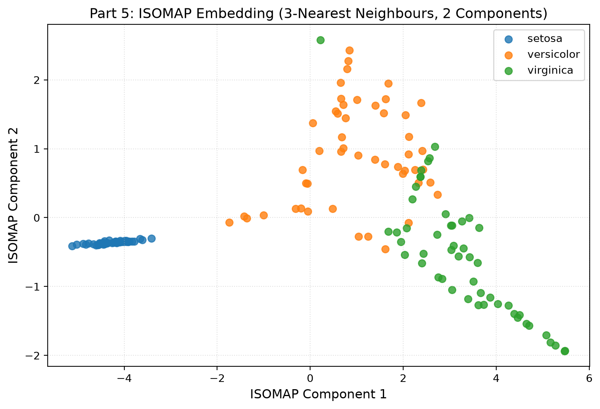
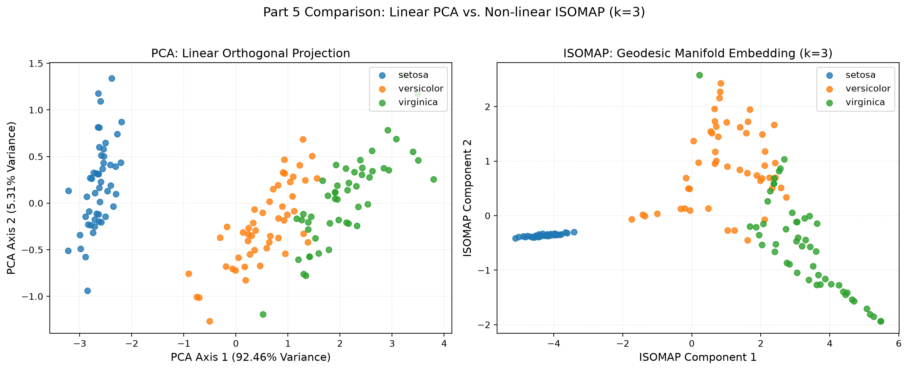

Assignment 3 — Principal Component Analysis & Non-Linear Manifolds
Consider a dataset containing 5 examples with 2 features each:
| Sample | $x_1$ | $x_2$ | Centered $\tilde{x}_1$ | Centered $\tilde{x}_2$ |
|---|---|---|---|---|
| $\mathbf{x}^{(1)}$ | -2 | -1 | -2 | -2 |
| $\mathbf{x}^{(2)}$ | -1 | 0 | -1 | -1 |
| $\mathbf{x}^{(3)}$ | 0 | 1 | 0 | 0 |
| $\mathbf{x}^{(4)}$ | 1 | 2 | 1 | 1 |
| $\mathbf{x}^{(5)}$ | 2 | 3 | 2 | 2 |
The handwritten step-by-step mathematical derivation for Part 1 is embedded below. You can also open or download the PDF in a new tab.
The plot below verifies the analytical calculations: the 5 training points, the sample mean, the first principal component axis, the test point (3, 3) with its orthogonal projection and error vector, and the test point (3, 4) lying directly on the PC1 subspace.

The Iris dataset was obtained from the UCI Machine Learning Repository. It comprises 150 instances of Iris flowers across 3 species (Iris setosa, Iris versicolor, Iris virginica), each characterized by 4 continuous morphological features:
The Iris dataset was obtained from the UCI Machine Learning Repository.
The Python script first checks for a locally cached copy of the original UCI dataset (assn3 material/iris.data).
If the file is unavailable, it attempts to download the dataset from the UCI archive.
If the download is unsuccessful, the script falls back to the equivalent Iris dataset provided by scikit-learn.
This ensures that the analysis can still run reliably when the UCI source is temporarily unavailable.
def load_iris_data():
"""Load Iris dataset from local UCI cache, UCI repository URL, or sklearn fallback."""
feature_names = ["sepal length (cm)", "sepal width (cm)", "petal length (cm)", "petal width (cm)"]
target_names = ["setosa", "versicolor", "virginica"]
class_map = {"Iris-setosa": 0, "Iris-versicolor": 1, "Iris-virginica": 2}
lines = []
# 1. Check for locally cached UCI iris.data
if DATA_PATH.exists():
with open(DATA_PATH, "r", encoding="utf-8") as f:
lines = [l.strip() for l in f if l.strip()]
else:
# 2. Attempt download from UCI archive
try:
req = urllib.request.Request(UCI_URL, headers={"User-Agent": "Mozilla/5.0"})
with urllib.request.urlopen(req, timeout=10) as resp:
content = resp.read().decode("utf-8")
lines = [l.strip() for l in content.splitlines() if l.strip()]
except Exception:
pass
if lines:
try:
rows = [l.split(",") for l in lines]
X = np.array([[float(v) for v in r[:4]] for r in rows], dtype=float)
y = np.array([class_map[r[4]] for r in rows], dtype=int)
if len(X) == 150 and X.shape[1] == 4:
return IrisDataset(X, y, feature_names, target_names)
except Exception:
pass
# 3. Fallback to scikit-learn dataset
from sklearn.datasets import load_iris
return load_iris()Marginalization involves projecting the 4-dimensional Iris dataset onto a lower-dimensional coordinate subspace by selecting a subset of raw features (removing unselected feature dimensions). Below, the dataset is visualized marginalized onto 1 feature, 2 features, and 3 features.
Projecting onto Feature 3 (Petal Length) displays a strong natural split: Iris Setosa (blue) forms an isolated cluster below 2.0 cm, entirely separated from Iris Versicolor (orange, 3.0–5.1 cm) and Iris Virginica (green, 4.5–6.9 cm).

Comparing two different 2D marginalizations illustrates why feature choice determines cluster clarity:
Combining Petal Length, Petal Width, and Sepal Length creates a 3-dimensional projection. Versicolor and Virginica occupy partially overlapping regions, while Setosa remains distinctly separated.

Question: Do any of these marginalizations highlight the classification of the dataset into nice clusters, if so, which ones? Comment.
Evaluating and ranking the selected marginalizations based on visual cluster separation and classification suitability:
Conclusion: Petal measurements provide stronger visual discrimination between the three Iris species than sepal measurements. This indicates that petal length and width are the most informative morphological features for distinguishing species in this dataset.
Principal Component Analysis was performed on the Iris dataset using scikit-learn.
Unlike coordinate marginalization (which restricts data to original feature axes), PCA performs an optimal
orthogonal coordinate rotation to align the axes with the directions of maximum sample variance.
PCA was performed on the original measurements without standardizing the features. Because all four morphological attributes are measured in the same physical units (centimeters), retaining the original scale allows features with greater natural variation (such as petal length) to contribute more strongly to the principal components, faithfully preserving the true physical geometry of the specimens.
The table below provides the unit vectors wk (the eigenvectors / rows of pca.components_)
describing the four principal axes:
| Component | Sepal Length (cm) | Sepal Width (cm) | Petal Length (cm) | Petal Width (cm) | Variance (λ) | Explained Ratio |
|---|---|---|---|---|---|---|
| PC1 (Major Axis) | +0.3616 | -0.0823 | +0.8566 | +0.3588 | 4.2248 | 92.46% |
| PC2 | +0.6565 | +0.7297 | -0.1758 | -0.0747 | 0.2422 | 5.30% |
| PC3 | -0.5810 | +0.5964 | +0.0725 | +0.5491 | 0.0785 | 1.72% |
| PC4 | +0.3173 | -0.3241 | -0.4797 | +0.7511 | 0.0237 | 0.52% |
The figures below display the dataset projected onto the major axis (1D), the top 2 axes (2D), and the top 3 axes (3D):
Projecting onto PC1 alone captures 92.46% of the total variance. Setosa is clearly separated from the other two species along this axis. However, Versicolor and Virginica still exhibit some overlap, indicating that the first principal component alone is insufficient for completely distinguishing all three species.

The top two principal components capture 97.76% of the total variance. PC1 is strongly influenced by petal length (+0.8566), while PC2 has positive loadings on sepal length (+0.6565) and sepal width (+0.7297) and negative loadings on petal length (−0.1758) and petal width (−0.0747). PC2 therefore represents a contrast between the sepal measurements and the petal measurements. The two-dimensional representation retains most of the original dataset's variation while providing a clearer visual view of the species distribution.

The top 3 axes account for 99.48% of the total dataset variance, capturing virtually all geometric structure.

In class, we discussed the analysis view of PCA: PCA finds a $K$-dimensional orthogonal projection that maximizes the variance retained in the projected data. Equivalently, it minimizes the total squared reconstruction error over all observations, measured by the squared Frobenius norm $\|\mathbf{X} - \hat{\mathbf{X}}\|_F^2$, among all rank-$K$ linear orthogonal projections.
For a centered data matrix $\mathbf{X}_c$ of size $N \times D$ (where each column has zero mean), the squared Frobenius norm is equal to the trace of its scatter matrix:
Let $\lambda_j^{(S)}$ denote the eigenvalues of the scatter matrix $\mathbf{S} = \mathbf{X}_c^T \mathbf{X}_c$. Then:
Alternatively, if $\lambda_j^{(\Sigma)}$ denotes the eigenvalues of the unbiased sample covariance matrix $\mathbf{\Sigma} = \mathbf{X}_c^T \mathbf{X}_c / (N - 1)$, then:
Thus, the total sample variance is the sum of the sample covariance eigenvalues:
When projected onto an orthonormal basis of $K$ principal components $\mathbf{W}_K = [\mathbf{w}_1, \dots, \mathbf{w}_K]$, the compressed low-dimensional representation is $\mathbf{Z}_K = \mathbf{X}_c \mathbf{W}_K$. Because the principal components are orthogonal, the squared Frobenius norm of $\mathbf{Z}_K$ equals the total scatter retained in the projected representation. Dividing by $N - 1$ gives the total sample variance captured by the selected components:
Hence, the fraction of total dataset variance explained by the $K$-dimensional representation is precisely:
For the Iris dataset ($N = 150, D = 4$):

Standard PCA assumes the data vary along global, linear orthogonal subspaces. When data live on a curved, non-linear manifold (where Euclidean straight-line distance through empty space is misleading), manifold learning algorithms such as ISOMAP (Isometric Feature Mapping) can be applied.
ISOMAP first constructs a neighbourhood graph using the k-nearest neighbours of each data point. It then estimates the geodesic distance between pairs of points by computing shortest-path distances through this graph. Finally, it applies a multidimensional scaling-based embedding to represent the geodesic distance structure in a lower-dimensional space.
In scikit-learn, the Isomap implementation uses a kernel PCA-based eigendecomposition to obtain the embedding
(pairing neighbourhood graph shortest paths with classical MDS). For this experiment, three nearest neighbours (k = 3) and
two output dimensions were selected as specified in the assignment.
Graph Connectivity Limitation: With three nearest neighbours, the Iris neighbourhood graph is disconnected into two components: the 50 Setosa samples form one component, and the remaining 100 Versicolor and Virginica samples form the second. Scikit-learn detects this disconnected structure and attempts to connect the components when computing the ISOMAP embedding. This graph completion can introduce estimated connections between originally disconnected components, potentially affecting the resulting embedding and its interpretation. Consequently, the relative positions of the two disconnected components in the final embedding should not be interpreted as reliable estimates of their true geodesic distances.
The following code shows the core implementation for fitting ISOMAP and generating the visualization, using the previously loaded Iris dataset:
from sklearn.manifold import Isomap
import matplotlib.pyplot as plt
# 1. Fit 2D ISOMAP embedding using 3-nearest neighbours
isomap = Isomap(n_neighbors=3, n_components=2)
X_isomap = isomap.fit_transform(X)
# 2. Visualize the 2D ISOMAP embedding colored by species
plt.figure(figsize=(8, 5.5))
colors = ["#1f77b4", "#ff7f0e", "#2ca02c"]
target_names = ["setosa", "versicolor", "virginica"]
for c_idx, (c_name, color) in enumerate(zip(target_names, colors)):
plt.scatter(
X_isomap[y == c_idx, 0],
X_isomap[y == c_idx, 1],
color=color,
alpha=0.8,
s=45,
label=c_name
)
plt.xlabel("ISOMAP Component 1")
plt.ylabel("ISOMAP Component 2")
plt.title("Part 5: ISOMAP Embedding (3-Nearest Neighbours, 2 Components)")
plt.grid(True, linestyle=":", alpha=0.4)
plt.legend(loc="upper right")
plt.tight_layout()
plt.savefig(OUTPUT_DIR / "part5_isomap_k3.png", dpi=200)

Question: Compare the dimensionality reduction using the non linear function and PCA, which is preferable and why? Evaluate against data compression criteria or the ability to classify the data.
| Evaluation Criteria | Linear PCA | Non-Linear ISOMAP (k = 3) | Comparison Summary |
|---|---|---|---|
| Data Compression | Analytical, linear projection & decompression: Provides an explicit orthogonal projection matrix $\mathbf{W}$. Encoding is $\mathbf{z} = \mathbf{W}^T(\mathbf{x} - \mathbf{\mu})$, and decoding is $\hat{\mathbf{x}} = \mathbf{W}\mathbf{z} + \mathbf{\mu}$. Reconstruction error is mathematically minimized ($\|\mathbf{X} - \hat{\mathbf{X}}\|_F^2$), retaining 97.76% of total dataset variance in 2D. |
Non-parametric embedding:
ISOMAP does not provide a simple linear projection matrix like PCA. Scikit-learn does support a transform() method for embedding new samples using their neighbourhood relationships with the training data.
However, reconstructing original feature values from the low-dimensional embedding is not directly equivalent to PCA's inverse linear transformation.
|
PCA (Clear Advantage) |
| Class Separation & Geometry | Preserves global data structure: PCA provides a two-dimensional representation in which Setosa is clearly separated from the other two species. Versicolor and Virginica still show some overlap, but their distributions are distinguishable to a considerable extent. The separation can be visually assessed using the two-dimensional PCA plot. | Graph sensitivity: The disconnected 3-nearest-neighbour graph requires graph completion during the ISOMAP computation. This can affect the relative positioning of the resulting clusters. The embedding should therefore be interpreted with caution, and clearer visual separation should not automatically be considered evidence of better classification performance. | PCA (More Stable) |
| Classification Performance (5-Fold Stratified CV, 5-NN) | 96.67% (± 2.11%) accuracy: Evaluated by fitting PCA strictly inside each training fold to prevent data leakage. Delivers high accuracy with tight fold-to-fold consistency. | 95.33% (± 4.00%) accuracy: Slightly lower accuracy and twice the variance across folds. Subsampling during cross-validation frequently fractures the k=3 nearest-neighbour graph into 2 or 3 disconnected components. | PCA (Higher & More Stable) |
| Computational Requirements | Generally efficient, particularly when the feature dimension is small. | More computationally demanding due to neighbour graph construction, shortest-path computation, and embedding. | PCA (More Efficient) |
| New Data Projection | Simple projection using the learned PCA axes ($\mathbf{z} = \mathbf{W}^T \tilde{\mathbf{x}}$). |
Uses neighbourhood relationships with the training data through transform().
|
PCA (Simpler) |
Conclusion & Recommendation:
For the Iris dataset, PCA is preferable for this particular dimensionality-reduction task:
Therefore, PCA is the more suitable method for this Iris dataset when considering both variance preservation and practical dimensionality reduction. ISOMAP remains useful for datasets with meaningful nonlinear manifold structures, where preserving geodesic distances may reveal patterns that linear PCA cannot capture.
The complete Python source code for all parts of Assignment 3 is available here:
run_pca.py.